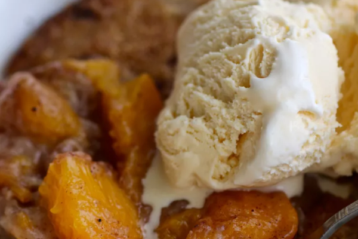

Odin
Recipes
Odin
Recipes
Best Peach Cobbler
This is the best peach cobbler recipe I have found. It makes a very moist cobbler with juicy sliced peaches that's easy to make and delicious to eat!
Ingredients
- 1 (29 ounce) can sliced peaches
- ½ cup water
- 1 cup milk
- 1 cup white sugar
- 1 cup all-purpose flour
- 2 teaspoons baking powder
- 1 pinch salt
- ½ cup butter
- 1 teaspoon ground cinnamon
- ¼ teaspoon ground nutmeg
Directions
-
Step 1
Preheat oven to 350 degrees F (175 degrees C.) In a large bowl, combine sliced peaches with juice, 2 tablespoons melted butter, a pinch of cinnamon and a pinch of nutmeg. Dissolve cornstarch in water, then stir into peach mixture; set aside.
-
Step 2
Combine milk, sugar, flour, baking powder and salt in another bowl; beat until smooth - the mixture will be thin.
-
Step 3
Melt 1/2 cup butter in a 9x13 inch pan. Pour batter over melted butter. Scoop peaches out of bowl and spoon over batter. Sprinkle top with additional cinnamon and nutmeg.
-
Step 4
Bake in preheated oven for 1 hour, or until knife inserted comes out clean.